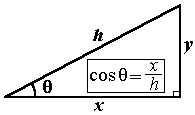

This example may seem a bit long and convoluted, but it tests your ability to handle absolute and relative error... all in one convenient problem, and your ability to simplify a problem.
First off, let's see how the horizontal distance x is related to the measured distance h from mountain top to mountain top. The quantities x and h are illustrated in the following diagram. The letter h stands for "hypotenuse" because it denotes the hypotenuse in the right triangle containing x.

The triangle implies the equation,
x = h cos 20o .  (1)
(1)
Thus, x and h are related by a constant factor. The absolute uncertainties of x and h, Dx and Dh, are related by the same constant factor,
Dx = Dh cos 20o .  (2)
(2)
Therefore, as dividing the left-hand sides and right-hand sides of Eqs. (1) and (2) by each other shows, the constant factor drops out and the relative uncertainties of x and h are equal,
Dx/x =
(Dh cos 20o)/(h cos
20o) = Dh/h
.  (3)
(3)
Similarly, the relative uncertainty of the one-way distance is equal to the relative uncertainty of the two-way distance, because these distances and their absolute uncertainties are related by the same constant factor of 2. Thus, the relative uncertainty in the horizontal distance, Dh/h, is equal to the relative uncertainty in the round-trip distance,
Dh/h = (0.2 m)/(5150.7 m) = 0.2/5150.7 = 0.000039 = 0.0039% = 4×10-3%.